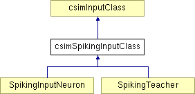

csimSpikingInputClass Class Reference
#include <csiminputclass.h>
Inheritance diagram for csimSpikingInputClass:

List of all members.
Detailed Description
Base class for all spiking input channel receiving classes like SpikingInputNeuron or SpikingTeacher.